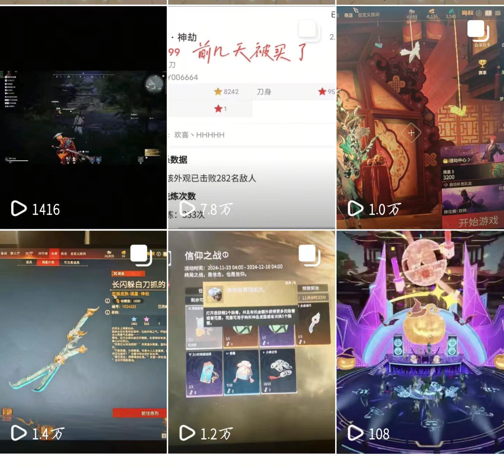
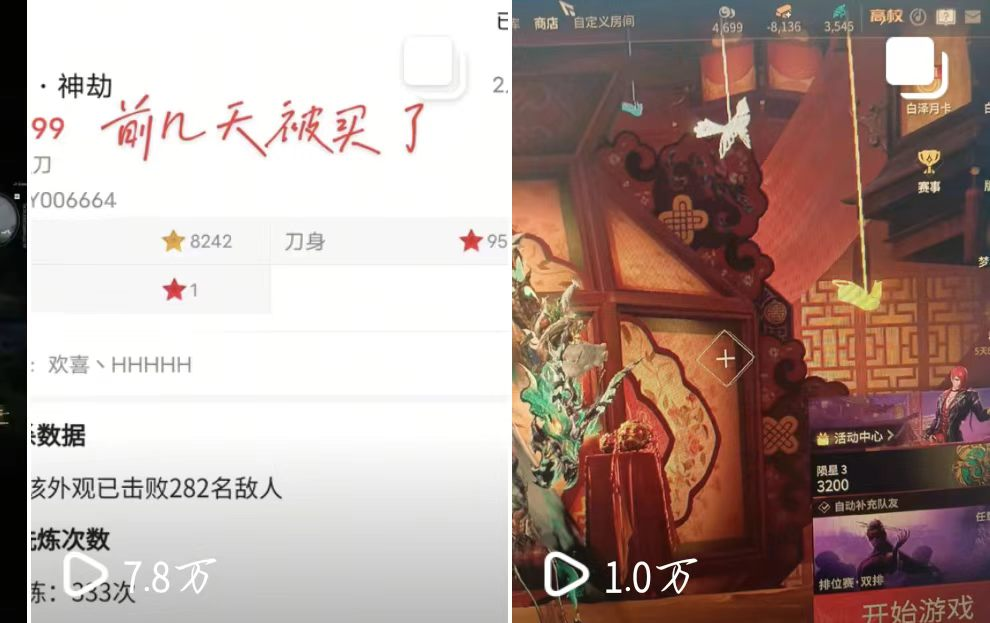

NO.01

抖音游戏内容账号「万钧」
独立完成永劫无间内容的选题、制作与运营。从后台数据反推问题、改开头结构与 BGM，做出 4 条播放量破万、单条最高 7.8 万的成绩。
展开完整过程
CONTEXT — 背景
围绕永劫无间玩家社区持续产出内容，重点跟进藏宝阁外观交易、版本活动等热点节点。发了一段时间后，播放量忽高忽低——有的能破万，有的发出去就没动静。我想搞清楚到底是什么决定了播放量，而不是靠感觉继续发。
STEP 1｜先看后台数据，不猜
抖音创作者后台给了三类能反映"内容留不留得住人"的指标。拉出来看，问题很明显：完播率不低，但 2 秒跳出率偏高——说明大量观众是在最开头几秒就走了，人根本没被留住。
完播率70%看完整条的比例
人均播放时长15s平均停留时长
2秒跳出率41.3%开头 2 秒就划走
这三个数是后台给的整体口径。有意思的是它并不"差"——70% 完播其实不算低。所以单看一个数字看不出问题，必须把"破万"和"没破万"的视频摆在一起对比，看哪个指标的差距最大。
STEP 2｜对比破万 vs 没破万，差异最大的指标
把两类视频的同口径指标并排放，差距一下子就集中到了一处：播放量高的那批，开头 2 秒的留存明显更好；而没破万的，几乎都栽在开头——2 秒跳出率高、人均时长被拖短，后面内容再好也没机会被看到。
| 指标 | 破万的视频（4 条） | 没破万的视频 | 差距 |
|---|---|---|---|
| 开头 2 秒留存 | 高 · 前 3 秒即抛悬念 | 低 · 平铺直叙开场 | 差异最大 ✓ |
| 完播率 | 70% 左右 | 略低 | 差距小 |
| 人均播放时长 | 约 15 秒 | 更短 | 差距中等（受开头拖累） |
结论：决定播放量的不是"内容好不好"，而是"前 3 秒有没有钩子"。完播率两者差距并不大，说明内容本身的质量是稳定的；播放量的分化几乎全部发生在开头那一下——这正好和 41.3% 的 2 秒跳出率对上。下面的调整就只针对这一个变量，不做无关的折腾。
STEP 3｜据此调整了什么
- 改开头结构：把最有冲突、最反常识的信息（比如"外观被买走了"这类事件结果）直接提到第 1 秒，先抛悬念再讲来龙去脉——不再用铺垫式的"大家好今天聊一下…"开场；
- 换 BGM：开头几秒换成节奏更紧、情绪更强的音轨，用声音把观众"按"在画面里，配合画面在前 2 秒制造停顿感；
- 一次只改一个变量：选题、标签、发布时机保持不动，单独验证"开头"这一个假设——否则数据变好也不知道是谁的功劳。
STEP 4｜调整后的结果
看到 2 秒跳出率 41.3%→
改开头前 3 秒 + BGM→
4 条破万 / 最高 7.8 万
调整开头结构与 BGM 之后发的那批内容，4 条播放量破万，其中藏宝阁交易那条做到 7.8 万播放——并且拿到了 106 赞 / 91 评论 / 9 分享，评论量接近点赞量，说明内容真的被讨论，而不只是被划过去。
OUTCOME — 结果
78,000+ 单条最高播放
106 / 91 点赞 / 评论
4 条 播放破万
70% 完播率
EVIDENCE — 证据

7.8万播放 · 106赞 / 91评论 / 9分享
1.4万播放 · 外观内容
复盘：这条线走完我才真正理解内容运营——不是"发视频"，是"提假设 → 看数据 → 改一个变量 → 再验证"。播放量不是玄学，它是一个可以被拆解、被定位、被优化的指标。这和运营任何一个产品的思路完全一样：先看数据找出瓶颈在哪，再把力气花在那个瓶颈上，而不是把每个环节都凭感觉重做一遍。